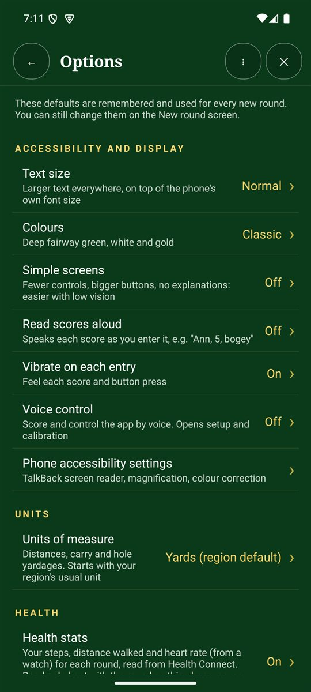

Open Options from the Scorecard+ menu. Your choices are remembered and used for every new round. You can still change game settings on the New round screen.
Accessibility and display
- Text size: larger text everywhere, on top of your phone's own font size.
- Colours: the colour scheme. Classic is deep fairway green, white and gold.
- Simple screens: fewer controls, bigger buttons and no explanations. Easier with low vision.
- Read scores aloud: speaks each score as you enter it, for example "Ann, 5, bogey".
- Vibrate on each entry and Voice control (score and control the app by voice).
- A shortcut to your phone's own accessibility settings: TalkBack, magnification and colour correction.
Units
Yards or metres, for distances and hole yardages. It starts with your region's usual unit.

Health stats
Turn on to see your steps, distance walked and heart rate on each finished round's card. The data comes from Health Connect; heart rate needs a watch that shares with it. It stays on your phone.
Sound and celebrations
Score sounds: chimes as you score, fanfares for bests and wins, and silly noises in Fun mode.
New rounds and recording
- Style, format and handicaps: your usual game. See Start a new round.
- Putts and clubs: what to record on each hole.
- Real-time hints as you play.
- Hole map and GPS: show each hole's layout, with Follow me and distances, at the top of the hole page.
- Shot details open on each hole, plays-like distance and club suggestion.
- Offer the next hole: with Follow me on, offers to move on when you walk onto the next tee. It never moves by itself.
Sun mode
Bright, high-contrast colours with the screen kept on. Choose the Black look (white and yellow on black) or White (dark text on white). Try both in real sun.
Cloud backup and shared scorecards
Cloud backup is optional and off until you turn it on. When it's on:
- Back up all finished rounds now copies every finished round to your private cloud backup.
- Restore rounds from the cloud adds backed-up rounds that aren't on this phone. Nothing on the phone is overwritten.
- Competitions and Friends use it to share scores.
Backups are stored with Google Firebase in London. See our privacy policy.
Downloads and data
- Copy scorecards to Downloads: keeps
Downloads/GolfTracer/scorecardsup to date after each hole, so you can copy them over USB. - Download course details automatically: fetch pars and stroke indexes when you choose a nearby course.
- Time on each website: how long the app spends on each club website when looking up scorecards and prices (15 seconds by default).